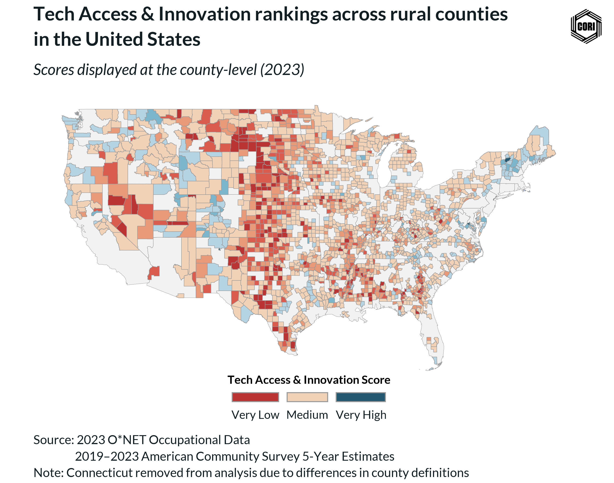
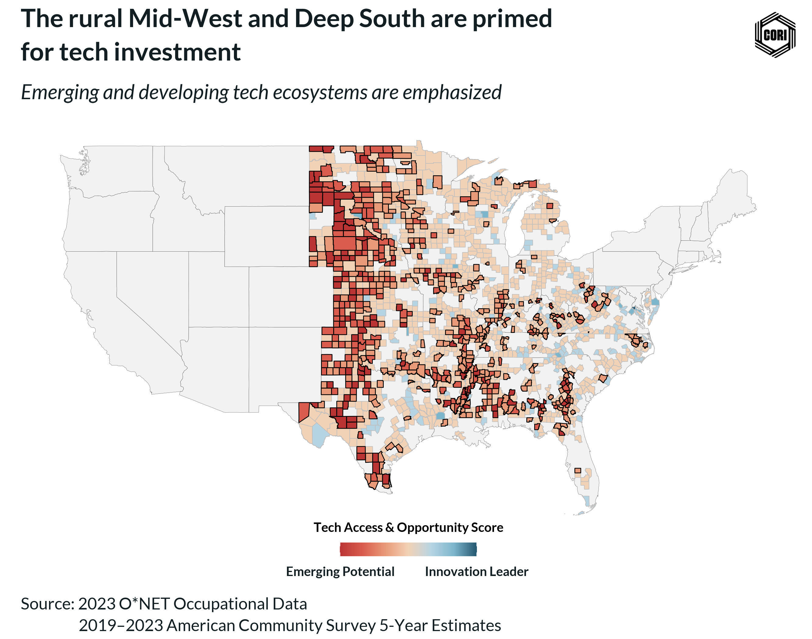

A Bright Future: Unlocking Tech Access and Opportunity Across Rural America
While urban centers have long been synonymous with tech innovation, a powerful transformation is on the horizon. Researchers at the Center on Rural Innovation (CORI) have created a meaningful and data-driven method to identify and understand tech access and opportunity across every county in the United States. This breakthrough effort introduces the Tech Access and Opportunity Score–a unique measure that empowers policymakers, community leaders, and economic developers with the insights they need to take meaningful action. The measure offers a clear, quantifiable view of where high-tech opportunities are flourishing and where they can be strategically nurtured, especially in rural counties that have historically been left out of the digital economy.
A smart tool for the high-tech era
At the heart of this initiative is a simple but powerful idea: access to the digital economy should not depend on geography. To bring this vision to life, CORI researchers have developed a scale that measures high-tech employment, business activity, high-tech job postings, and related services to produce a single, easy to understand score for each U.S. county. Ranging from Very Low to Very High, this score gives communities a roadmap for growth and provides a compelling tool for crafting pragmatic, locally-informed tech policy.
Rural potential: Not just a possiblity–it’s already happening
While it’s true that urban centers currently dominate the tech landscape, rural America holds enormous untapped potential, and that potential is already being realized in key places. Our analysis reveals that some rural counties have reached the highest levels of tech access and opportunity, demonstrating that success is not only possible but already happening. These rural innovation hubs serve as models of what’s possible with targeted investment, community engagement, and smart policy.
Moreover, high-tech jobs in rural communities have the power to be transformational. They bring higher wages, foster local entrepreneurship, attract talent back home, and contribute to diversified, resilient local economies. By identifying where gaps exist and where growth is happening, CORI’s Tech Access and Opportunity Score becomes a springboard for identifying and scaling rural success across the country.
Closing the gap with insight and intention
Of course, challenges remain. Our research finds that rural counties are disproportionately represented among the areas with lower tech access. But this fact doesn’t signify failure–it signals where opportunity for change is greatest. In fact, over 85% of rural counties currently fall below the national median for tech access, making them ideal targets for future investment and innovation initiatives.

Spotlighting regions for growth
Within our analysis, several patterns emerge that shine a light on key regions for policy focus. This is especially true in the rural Midwest and Deep South. These regions currently face lower access to tech jobs and resources, but they are also rich in talent, culture, and resilience. With the right support, these areas are poised to become the next wave of tech-enabled communities.
Focused policy efforts are especially important in areas with long-standing racial and economic inequities, such as the Deep South. By pinpointing where access is currently limited, this tool helps stakeholders prioritize equity-based solutions that ensure all Americans—no matter where they live—have a fair shot at success in the digital economy.

A path forward with tech
Our analysis also reveals how tech access impacts broader economic health. In places with higher tech access and opportunity, median household incomes are significantly higher, poverty is lower, and communities are growing. These insights highlight a clear pathway forward: strengthening rural economies with thriving tech ecosystems can catalyze lasting prosperity.
Rather than framing rural areas in terms of what they lack, this research invites us to think about what they can gain—and what the nation stands to gain by uplifting them. Through CORI’s Tech Access and Opportunity Score, we can craft smart, inclusive policies that target real needs, drive innovation, and close the rural-urban divide.
Optimism, Innovation, and Impact
The launch of CORI’s new research marks a turning point. Since America’s turn toward a digital economy, the absence of data has made it easy to overlook rural communities in tech-driven conversations. Today, CORI is equipped with the tools to change that narrative and drive meaningful, community-based policies that strongly align with the interests of rural America and the millions of people who call it home.
At CORI, we believe that rural America belongs in the future of tech. And with this new resource, we can work together—researchers, policymakers, and communities alike—to ensure that future is bright, inclusive, and accessible to all.
An interactive look at tech access and opportunity
Did you find CORI’s Tech Access and Opportunity Score as interesting as we did? Take a look at the interactive map to find your county. The map displays the scores for all counties in the U.S. for the year 2023. Hover over a selected county and compare it to its neighbors.